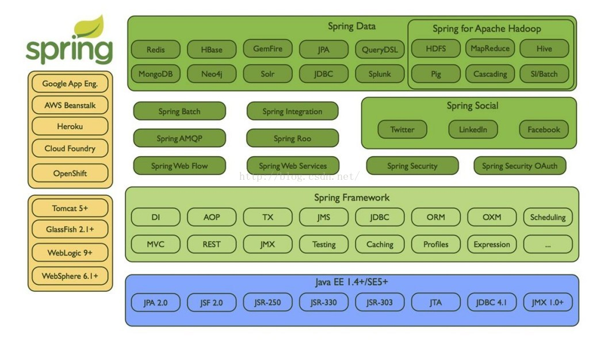
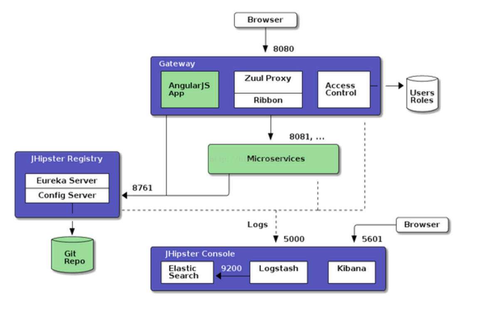
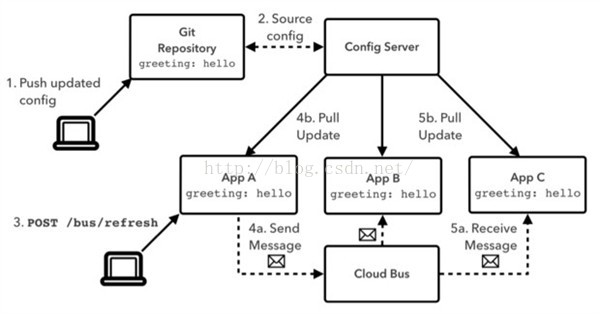
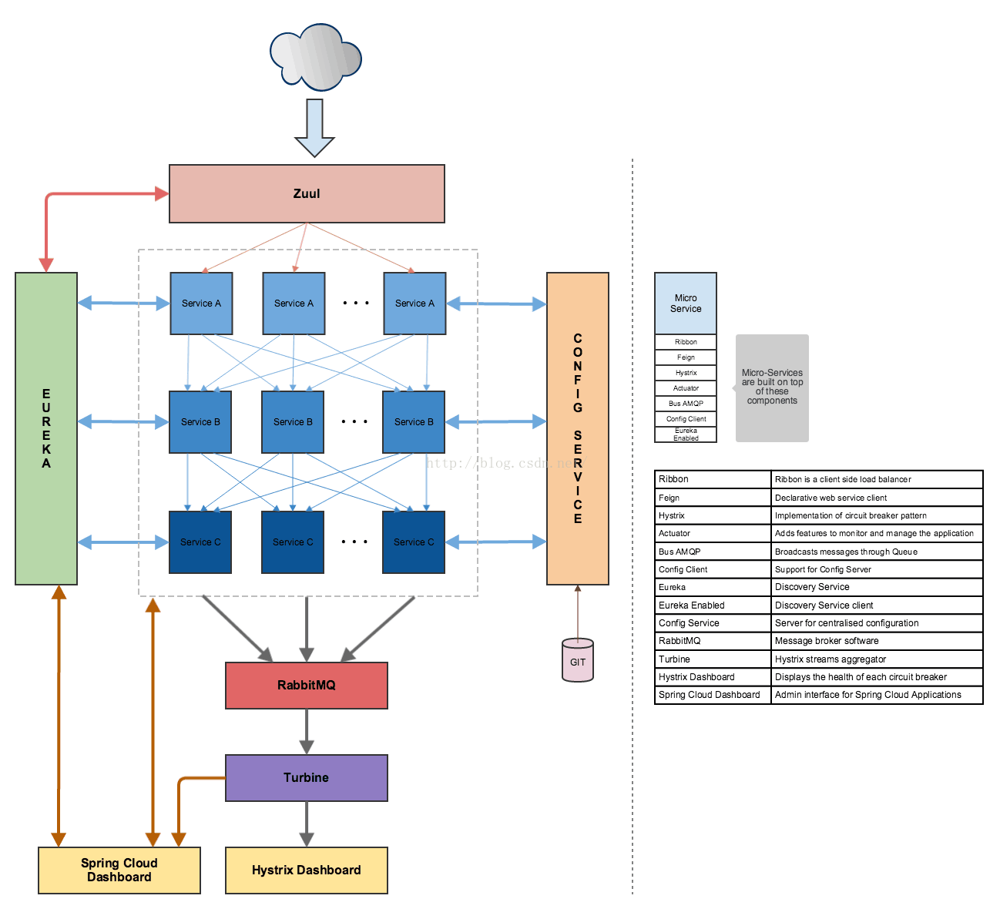

SpringCloud介绍
微服务架构概述
微服务特性以及优点
服务独立运行、一系列服务共同构建整体系统； 服务独立业务开发，技术栈不受限，一个服务只关注某个特定功能； 微服务之间通过轻量级机制通讯，如Restful API； 自动部署机制； 按需伸缩，细粒度水平扩展。
- 每个服务可以独立运行在自己的进程里
- 一系列独立运行的微服务(goods,order,pay,user,search…)共同构建了整个系统
- 每个服务为独立的业务开发，一个微服务只关注某个特定的功能，例如用户管理，商品管理微服务
- 微服务之间通过一些轻量级的通信机制进行通讯，例如通过Restful API进行调用
- 技术栈不受限:可以使用不同的开发语言和数据存储技术
- 全自动的部署机制
- 按需伸缩:根据需求和应用场景，实现细粒度的水平扩展
微服务带来的挑战
- 运维要求较高
- 分布式的复杂性
- 接口调整成本较高
微服务设计原则
- 单一职责原则
- 服务自治原则
- 轻量级通讯机制
- 微服务粒度
微服务开发框架
- SpringCloud:众多组件构造完善的分布式系统
- Dubbo/Dubbox:关注服务治理
- Dropwizard:关注单个微服务开发
SpringCloud概述与开发环境
-
基于Spring Boot和Spring Cloud实现微服务架构学习:
- 2016年07月24日 00:48:50 by zeb_perfect
- http://blog.csdn.net/ittechnologyhome/article/details/73824784
- http://blog.csdn.net/zeb_perfect/article/details/52008192
SpringCloud概述
SpringCloud是基于SpringBoot之上的用来快速构建微服务系统的工具集，拥有功能完善的轻量级微服务组件，例如服务治理(Eureka),声明式REST调用(Feign),客户端负载均衡(Ribbon),服务容错(Hystrix),服务网关(Zuul)以及服务配置(Spring Cloud Config),服务跟踪(Sleuth)等等。
官网链接:http://projects.spring.io/spring-cloud/ 目前主流的版本为SpringBoot1.4.5.RELEAE和SpringCloudCamden.SR7,
Spring Cloud是一个基于Spring Boot实现的云应用开发工具，它为基于JVM的云应用开发中的配置管理、服务发现、断路器、智能路由、微代理、控制总线、全局锁、决策竞选、分布式会话和集群状态管理等操作提供了一种简单的开发方式。

Spring IO platform:用于系统部署，是可集成的，构建现代化应用的版本平台，具体来说当你使用maven dependency引入spring jar包时它就在工作了。
Spring Boot:旨在简化创建产品级的 Spring 应用和服务，简化了配置文件，使用嵌入式web服务器，含有诸多开箱即用微服务功能，可以和spring cloud联合部署。
Spring Framework:即通常所说的spring 框架，是一个开源的Java/Java EE全功能栈应用程序框架，其它spring项目如spring boot也依赖于此框架。
Spring Cloud：微服务工具包，为开发者提供了在分布式系统的配置管理、服务发现、断路器、智能路由、微代理、控制总线等开发工具包。
Spring XD：是一种运行时环境（服务器软件，非开发框架），组合spring技术，如spring batch、spring boot、spring data，采集大数据并处理。
Spring Data：是一个数据访问及操作的工具包，封装了很多种数据及数据库的访问相关技术，包括：jdbc、Redis、MongoDB、Neo4j等。
Spring Batch：批处理框架，或说是批量任务执行管理器，功能包括任务调度、日志记录/跟踪等。
Spring Security：是一个能够为基于Spring的企业应用系统提供声明式的安全访问控制解决方案的安全框架。
Spring Integration：面向企业应用集成（EAI/ESB）的编程框架，支持的通信方式包括HTTP、FTP、TCP/UDP、JMS、RabbitMQ、Email等。
Spring Social：一组工具包，一组连接社交服务API，如Twitter、Facebook、LinkedIn、GitHub等，有几十个。
Spring AMQP：消息队列操作的工具包，主要是封装了RabbitMQ的操作。
Spring HATEOAS：是一个用于支持实现超文本驱动的 REST Web 服务的开发库。
Spring Mobile：是Spring MVC的扩展，用来简化手机上的Web应用开发。
Spring for Android：是Spring框架的一个扩展，其主要目的在乎简化Android本地应用的开发，提供RestTemplate来访问Rest服务。
Spring Web Flow：目标是成为管理Web应用页面流程的最佳方案，将页面跳转流程单独管理，并可配置。
Spring LDAP：是一个用于操作LDAP的Java工具包，基于Spring的JdbcTemplate模式，简化LDAP访问。
Spring Session：session管理的开发工具包，让你可以把session保存到redis等，进行集群化session管理。
Spring Web Services：是基于Spring的Web服务框架，提供SOAP服务开发，允许通过多种方式创建Web服务。
Spring Shell：提供交互式的Shell可让你使用简单的基于Spring的编程模型来开发命令，比如Spring Roo命令。
Spring Roo：是一种Spring开发的辅助工具，使用命令行操作来生成自动化项目，操作非常类似于Rails。
Spring Scala：为Scala语言编程提供的spring框架的封装（新的编程语言，Java平台的Scala于2003年底/2004年初发布）。
Spring BlazeDS Integration：一个开发RIA工具包，可以集成Adobe Flex、BlazeDS、Spring以及Java技术创建RIA。
Spring Loaded：用于实现java程序和web应用的热部署的开源工具。
Spring REST Shell：可以调用Rest服务的命令行工具，敲命令行操作Rest服务。
Spring cloud子项目
目前来说spring主要集中于spring boot（用于开发微服务）和spring cloud相关框架的开发，我们从几张图着手理解，然后再具体介绍：


spring cloud子项目包括：
Spring Cloud Config：配置管理开发工具包，可以让你把配置放到远程服务器，目前支持本地存储、Git以及Subversion。
Spring Cloud Bus：事件、消息总线，用于在集群（例如，配置变化事件）中传播状态变化，可与Spring Cloud Config联合实现热部署。
Spring Cloud Netflix：针对多种Netflix组件提供的开发工具包，其中包括Eureka、Hystrix、Zuul、Archaius等。
Netflix Eureka：云端负载均衡，一个基于 REST 的服务，用于定位服务，以实现云端的负载均衡和中间层服务器的故障转移。
Netflix Hystrix：容错管理工具，旨在通过控制服务和第三方库的节点,从而对延迟和故障提供更强大的容错能力。
Netflix Zuul：边缘服务工具，是提供动态路由，监控，弹性，安全等的边缘服务。
Netflix Archaius：配置管理API，包含一系列配置管理API，提供动态类型化属性、线程安全配置操作、轮询框架、回调机制等功能。
Spring Cloud for Cloud Foundry：通过Oauth2协议绑定服务到CloudFoundry，CloudFoundry是VMware推出的开源PaaS云平台。
Spring Cloud Sleuth：日志收集工具包，封装了Dapper,Zipkin和HTrace操作。
Spring Cloud Data Flow：大数据操作工具，通过命令行方式操作数据流。
Spring Cloud Security：安全工具包，为你的应用程序添加安全控制，主要是指OAuth2。
Spring Cloud Consul：封装了Consul操作，consul是一个服务发现与配置工具，与Docker容器可以无缝集成。
Spring Cloud Zookeeper：操作Zookeeper的工具包，用于使用zookeeper方式的服务注册和发现。
Spring Cloud Stream：数据流操作开发包，封装了与Redis,Rabbit、Kafka等发送接收消息。
Spring Cloud CLI：基于 Spring Boot CLI，可以让你以命令行方式快速建立云组件。
Spring Cloud与Dubbo对比
提到Dubbo，我想顺便提下ESB，目前央视新华社也在用ESB来做任务编排，这里先比较下Dubbo和ESB：
- ESB（企业数据总线），一般采用集中式转发请求，适合大量异构系统集成，侧重任务的编排，性能问题可通过异构的方式来进行规避，无法支持特别大的并发。
- Dubbo（服务注册管理），采用的是分布式调用，注册中心只记录地址信息，然后直连调用，适合并发及压力比较大的情况；其侧重服务的治理，将各个服务颗粒化，各个子业务系统在程序逻辑上完成业务的编排。
回归主题，Spring Cloud和Dubbo又有什么不同呢？
首先，我们看下有什么相同之处，它们两都具备分布式服务治理相关的功能，都能够提供服务注册、发现、路由、负载均衡等。
说到这，Dubbo的功能好像也就这么多了，但是Spring Cloud是提供了一整套企业级分布式云应用的完美解决方案，能够结合Spring Boot，Docker实现快速开发的目的，所以说Dubbo只有Spring Cloud的一部分RPC功能，而且也谈不上谁好谁坏。不过，Dubbo项目现已停止了更新，淘宝内部由hsf替代dubbo，我想这会有更多人倾向Spring Cloud了。
从开发角度上说，Dubbo常与Spring、zookeeper结合，而且实现只是通过xml来配置服务地址、名称、端口，代码的侵入性是很小的，相对Spring Cloud，它的实现需要类注解等，多少具有一定侵入性。
Spring Cloud子项目
Spring Cloud包含了多个子项目（针对分布式系统中涉及的多个不同开源产品），之前在第一章节也介绍这些，比如：Spring Cloud Config、Spring Cloud Netflix、Spring Cloud CloudFoundry、Spring Cloud AWS、Spring Cloud Security、Spring Cloud Commons、Spring Cloud Zookeeper、Spring Cloud CLI等项目，可以跳至（一）看下。
配置服务
Spring Cloud提供了Config Server，它有在分布式系统开发中做外部配置的功能，通过Config Server我们可以集中存储所有应用的配置文件。Config Server支持Git或者在文件系统中放置配置文件（GitLab），通常我们使用不同格式来区分不同应用的不同配置文件。云计算环境下，习惯上使用YAML配置，而且一般配置文件的位置都放在类路径下的config目录下，配置文件规则：应用名＋profile.yml：
/{application}/{profile}[/{label}]
/{application}-{profile}.yml
/{label}/{application}-{profile}.yml
/{application}-{profile}.properties
/{label}/{application}-{profile}.properties
Spring Cloud提供了注解@EnableConfigServer来启动配置服务。
服务发现
Spring Cloud通过Netflix OSS的Eureka来实现服务发现，服务发现的主要目的是为了让每个服务之间可以互相通信。Eureka Server为微服务的注册中心。
谈到Spring Cloud Netflix，它是Spring Cloud的子项目之一，主要提供的模块包括：
- 服务发现（Eureka）
- 断路器（Hystrix）
- 智能路由（Zuul）
- 客户端负载均衡（Ribbon）
Spring Cloud使用注解的方式提供了Eureka服务端（@EnableEurekaServer）和客户端（@EnableEurekaClient）。
路由网关
路由网关的主要目的是为了让所有的微服务对外只有一个接口，我们只需访问一个网关地址，即可由网关将所有的请求代理到不同的服务中。Spring Cloud是通过Zuul来实现的，支持自动路由映射到在Eureka Server上注册的服务。Spring Cloud提供了注解@EnableZuulProxy来启用路由代理。
负载均衡
Spring Cloud提供了Ribbon和Feign作为客户端的负载均衡。
在Spring Cloud下，使用Ribbon直接注入一个RestTemplate对象即可，此RestTemplate已做好负载均衡的配置；
而使用Feign只需定义个注解，有@FeignClient注解的接口，然后使用@RequestMapping注解在方法上映射远程的REST服务，此方法也是做好了负载均衡配置。
断路器
断路器（Circuit Breaker）主要是为了解决当某个方法调用失败的时候，调用后备方法来替代失败的方法，以达到容错／阻止级联错误的功能。
Spring Cloud使用@EnableCircuitBreaker来启用断路器支持，使用@HystrixCommand的fallbackMethod来指定后备方法。（@HystrixCommand(fallbackMethod="fallbackOper")）
Spring Cloud还提供了一个控制台来监控断路器的运行情况，通过@EnableHystrixDashboard注解开启。
Spring Cloud依赖库
这里我会罗列下常用的一些依赖包，为了更好理解每个依赖所负责的区域，我还是用一张和之前类似的图来展示各块的功能：

常用依赖包如下：
spring-cloud-starter-parent 具备spring-boot-starter-parent同样功能并附加Spring Cloud的依赖
spring-cloud-starter-config 默认的配置服务依赖，快速自动引入服务的方式，端口8888
spring-cloud-config-server／client 用户自定义配置服务的服务端／客户端依赖
spring-cloud-starter-eureka-server 服务发现的Eureka Server依赖
spring-cloud-starter-eureka 服务发现的Eureka客户端依赖
spring-cloud-starter-hystrix／zuul／feign／ribbon 断路器（Hystrix），智能路由（Zuul），客户端负载均衡（Ribbon）的依赖
angular-ui-router 页面分发路由依赖
总结
这里所有的总结只是停留在对Spring Cloud的理解上，我推荐去http://projects.spring.io/spring-cloud/官网导读多实践下项目，了解下各个模块的服务消息通信方式等，大概就是这样。
如果你对Spring Cloud感兴趣，想了解Spring Boot快速开发，以及使用JHipster生成构建Spring Boot + AngularJS的应用代码，欢迎加QQ群：58612944，里面有很多大牛指导，我也在学习中。另外，群里我们在组织翻译GitHub上JHipster的官方文档，如果感兴趣，可以进来一块为开源做贡献。
- 关于JHipster扩展
JHipster -> 关于SpringBoot,AngularJS及Spring生态融合的技术栈, 是SpringBoot的最佳实践,是SpringCloud对Netflix技术栈的最佳实践,是J2EE-Cloud微服务的最佳实践,是Docker,Kubernetes和AngularJS1/2的最佳实践,是全栈式开发,敏捷开发最理想的工具。
- JHipster或者称Java Hipster，是一个应用代码产生器，能够创建Spring Boot + AngularJS的应用。开源项目地址：JHipster/Github。
- JHipster使用Node.js和Yeoman产生Java应用代码。